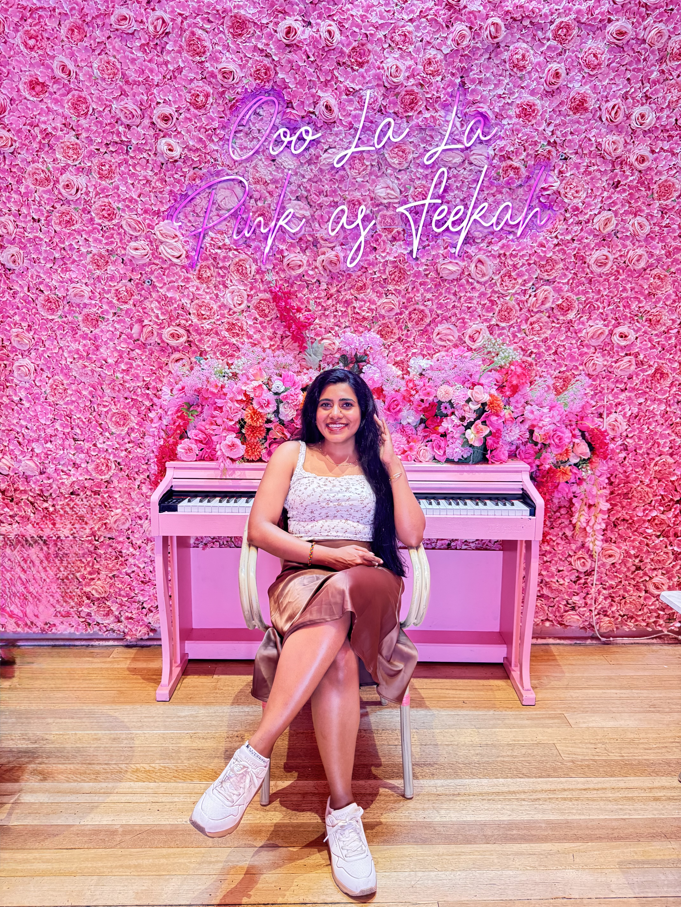

Becoming your most aligned self
I’m Athulya — a curious, cheerful creator who loves movement, stories, and helping people transform from the inside out. This space is a mix of my experiences, my healing, and everything I’m learning about building a life that actually feels good.
Explore Aligned Life
My story
I grew up all over India — new cities every few years, new schools, new people, new cultures.
Most kids hate moving; I loved it. Every place felt like a different world, and every world came with new languages, food, and ways of living.
Somewhere between the train rides, the cardboard boxes, and the “nice to meet yous,” I learned to read people — their moods, their stories, their hopes. That curiosity never left.
But there was a flip side to that skill: I became the “nice girl.”
The daughter who didn’t cause trouble.
The friend who always understood.
The person who kept everyone comfortable — even at the cost of herself.
That pattern followed me into adulthood. And it took one deeply unhealthy, narcissistic relationship to crack it open.
I won’t glorify it — it was painful, confusing, and exhausting.
But it forced me into the one battle I had avoided my whole life: choosing myself.
Healing didn’t happen overnight.
It came in quiet moments — the day I realised I had stopped recognising myself, the night I promised I wouldn’t break my own boundaries again, the morning I chose self-respect over fear. Slowly, I rebuilt my self-image from the inside out. And in the process, I found a version of myself that felt more honest, more grounded, and more me than ever before.
That’s why I create content.
I want to help people — especially women — see themselves clearly, love themselves fully, and stop shrinking to fit someone else’s comfort.
My YouTube channel, my writing, and everything I share here comes from that belief: your life changes the moment you decide to show up as the best version of yourself — not the most convenient version for others.
Outside of this work, I’m just a cheerful, curious human who loves belly dancing, travelling to new places, getting competitive in board games, and trying anything that makes life more playful. I care deeply about mental health, empathy, authenticity, and building a life that feels full — not perfect, just full.
This space is my journey — the lessons I’ve earned, the mistakes I’ve made, the tools that helped me heal, and the courage it takes to grow into the person you were always capable of becoming.
Welcome.
I’m glad you’re here.